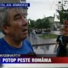
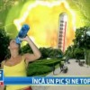

România e ţara blestemelor. Noi nu avem climă temperată cu patru anotimpuri, ci climă extremă cu patru coşmaruri. Nouă nu ne e cald sau frig, ci ne topim sau îngheţăm. Noi nu avem ploi şi ninsori, ci potopuri şi căderi masive de zăpadă.
Probabil fiindcă Mama Natură ne detestă, Dumnezeu „şi-a întors faţa de la noi”, iar dacii şi romanii au format poporul român într-o zi de vineri 13, pentru noi fiecare anotimp nu e decât un ghem de pericole care aşteaptă după uşă, mereu aceleaşi, însă, paradoxal, mereu surprinzătoare.
Să vezi ce-o să fie!
Începem să pândim proverbialul drob de sare încă dinainte să se iţească primii ghiocei. Atunci ne frângem mâinile pentru că a fost prea frig, iar recoltele au degerat sau, din contră, a fost prea cald, iar pomii fructiferi dau să înflorească înainte de vreme, riscând să fie distruşi de un pui de frig răzleţ. Omătul e ori prea puţin, deci răsadurile se usucă din lipsă de apă, ori prea mult, ameninţând să înece legumele din faşă.
Indiferent care ar fi condiţiile meteo, concluziile sunt aceleaşi: la vară tarabele vor fi goale, preţurile mari, exporturile mici, agricultorii mai săraci ca niciodată, iar românii, inevitabil, înfometaţi şi nefericiţi.
Dacă nu ne bântuie spectrul foamei, atunci ne dă insomnii teama de inundaţii. Încă pare incredibil, dar zăpada are prostul obicei de a se topi la peste zero grade. Unde mai pui că toată deodată! Apa rezultată e întotdeauna udă şi curge în jos de fiecare dată. Cu toate astea, revărsările de râuri ne prind mereu nepregătiţi, fără baraje, fără saci de nisip, fără pompe şi, în general, fără habar. Pregătirile noastre se limitează la avertizări din partea meteorologilor, dezbateri şi unghii roase.
Nici n-apucă să se usuce bine bălţile lui prier, că ne trezim cu alt vis urât în pregătire: canicula. Fiecare vară urmează să fie „cea mai toridă din ultimii X ani”, prilej numai bun pentru reluarea discuţiilor despre încălzirea globală şi pentru repetarea, la nesfârşit, a sfaturilor de sezon.
Dacă apropierea toamnei infirmă previziunile sumbre legate de recoltă, iar pieţele gem de legume şi fructe, atunci ne văităm că oferta e prea mare şi cererea prea mică. Asta nu pentru că românii ar prefera şaorma, ci pentru că starea jalnică în care i-au adus asupritorii nu le permite să-şi cumpere nici măcar un kilogram de cartofi. În timp ce îi privim cu milă pe ţăranii care preferă să-şi lase producţia să putrezească pe câmp decât să lase la preţ, nu uităm să ne înfiorăm din pricina viitoarelor facturi la energie termică. Negreşit ele vor fi duble sau triple, după cum ne prorocesc anual Radu Opaina şi prietenii săi.
Astfel, începutul lui decembrie ne găseşte cu inima cât un purice, convinşi că ne aşteaptă o iarnă deosebit de grea şi nişte Sărbători în timpul cărora „nu vom avea ce pune pe masă”. Deprimaţi, ne resemnăm în spatele neputinciosului „ce să facem?”, constatând totdeauna că mai rău nu se poate. An de an, povestea se repetă.


{kind=link}
{kind=link}
da, tu evidentiezi niste clisee, insa totusi nu e chiar asa. De exemplu toata lumea in cor a spus ca anul trecut a fost unul de exceptie dpdv agricol. Si cred ca si anul care vine va fi bun. Desigur, dupa ce vom trece de inundatii …
Reportaj de anul trecut. Începe fix aşa:
Link spre video.
Şi tag-urile sunt interesante: seceta scumpiri alimente vara secetoasa parjol vara recolta preturi procente
Da, din 2011.
Tata spunea ca “americanii isi bat joc de noi”
De fiecare data cand vedea vreun avion pe desupra casei incepea sa delireze ca “acum arunca aia cu otravuri ca sa ne nenoroceasca recoltele”.
Eu zic, deci, ca paranoia exista la limitele ei superioare, chiar in oamenii de langa noi.
Comments on this entry are closed.